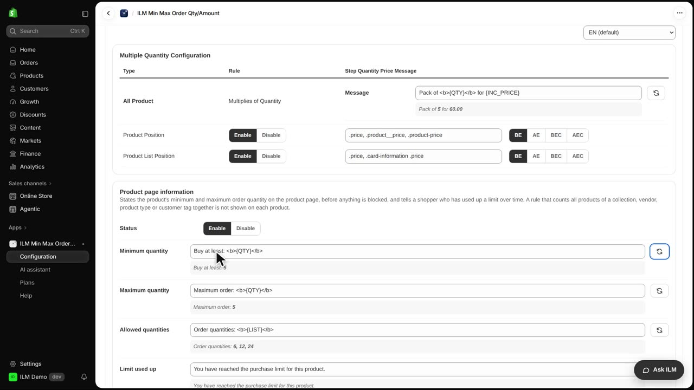
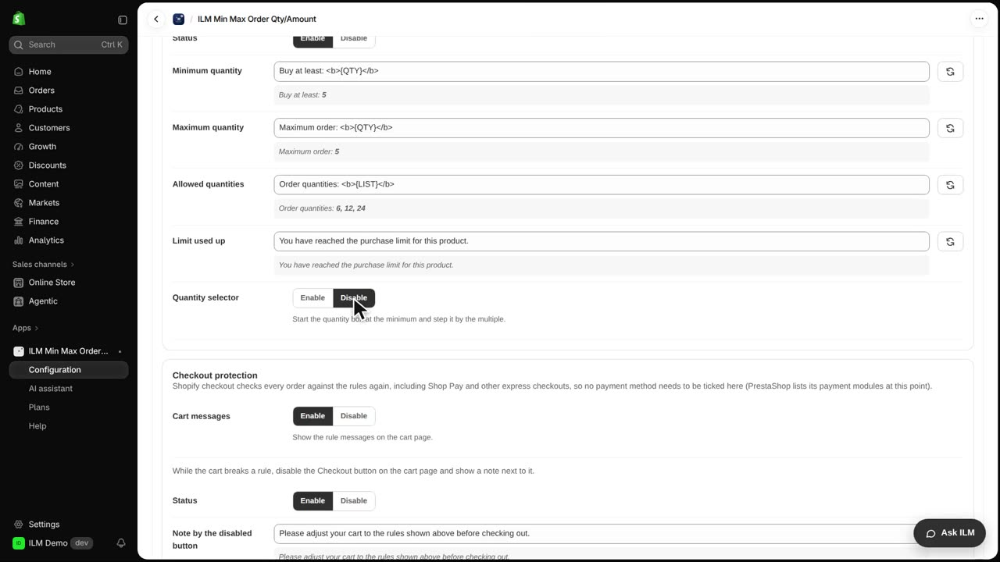
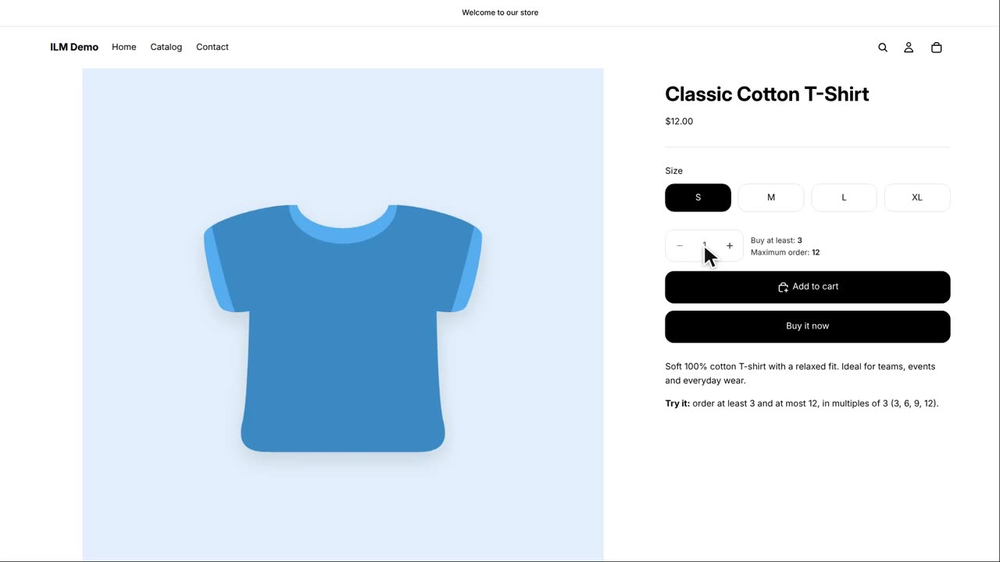

The product page is where shoppers decide how many to buy, so it should tell them the limits before anything is blocked. With Product page information, you can show a friendly minimum and maximum message right next to the quantity box. Today we use the Classic Cotton T-Shirt, which has a rule of at least three and at most twelve. You will see how the message appears, how to change its wording, and how to switch it off.
Here is the Classic Cotton T-Shirt product page with the information line shown next to the quantity box. The message tells the shopper the minimum and maximum, and the quantity box already starts at the minimum of three.
Now we go to the admin, open Configuration, then Advanced, and find the Product page information card. The text for Minimum quantity is changed to Buy at least, so the line reads in a friendlier way. Each line here is a message template, and you can reword it to match your store's tone.

Next, the Quantity selector setting is set to Disable. This means the quantity box no longer starts at the minimum, it starts at one again. Use this when you want the message to inform shoppers but you do not want the box pre-filled.

Back on the Classic Cotton T-Shirt product page, the new text Buy at least is shown, and the quantity box now starts at one. The rule itself is still active, so if a shopper tries to add fewer than three, the app will still block it at add to cart. The message is just information, the enforcement happens later.

Finally, we return to Configuration, Advanced, Product page information, and set the Status to Disable. This hides the information lines completely from the product page. The quantity rules still apply, shoppers just no longer see the message before they add to cart.